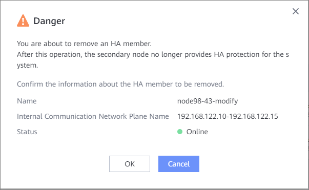

This section describes how to remove an HA member. After an HA member is removed, the HA member becomes a member node.
Prerequisites
HA members have been added to the system.
Procedure
- Choose .
- Click Backup Cluster.
- Choose .
- In the Danger dialog box, confirm the information and click OK.


- After the HA member is removed, the status of the standby node is Deleting. After a while, the system automatically refreshes the status and the status changes to Online.
- Forcible removal scenario: If the HA member to be removed is offline, forcibly remove it. Perform the following operations before forcibly removing an HA member:
- Log in to the CLI as an administrator or a super administrator.
- Run the following command to check the pod status of gaussdb-0:
show container_application general name=dataprotect namespace=dpa
If the following information is displayed, the pod status is normal.
PodList: Pod Name Pod Status Pod Restart Times Pod Cpu Percent(%) Pod Memory Percent(%) Pod Belong Node Pod Namespace Pod Is Ready ---------------------------- ---------- ----------------- ------------------ --------------------- --------------- ------------- ------------ gaussdb-0 Running 1 13.33 3.32 node-1 dpa true infrastructure-0 Running 1 -- 8.89 node-1 dpa true dataenableengine-server-0 Running 0 34.00 9.71 node-0 dpa true dataenableengine-server-1 Running 1 34.00 9.71 node-1 dpa true protectengine-e-dma-0 Running 1 1.33 0.32 node-1 dpa true protectengine-0 Running 1 -- 12.37 node-1 dpa true protectengine-1 Running 0 -- 12.37 node-0 dpa true sftp-0 Running 5 -- 0.77 node-1 dpa true protectmanager-biz-service-0 Running 0 13.33 3.73 node-0 dpa true protectmanager-biz-service-1 Running 1 13.33 3.73 node-1 dpa true protectmanager-system-base-1 Running 1 16.67 3.90 node-1 dpa true protectmanager-system-base-0 Running 0 16.67 3.90 node-0 dpa true
If gaussdb-0 pod is not in the running state, forcibly remove the HA member. No further action is required.
- Run the change user_mode current_mode user_mode=developer command to switch to the developer mode and perform operations as prompted.
- Run the minisystem command to enter the minisystem mode.
- If the pod status is normal but the standby node is offline, run the following command to stop the gaussdb-0 pod immediately (within 5 minutes) after the command for forcibly removing the HA node is delivered and perform operations as prompted.
container.sh -c kubectl delete pod gaussdb-0 -n dpa
If the following information is displayed, the pod is stopped successfully.
Storage: minisystem> container.sh -c kubectl delete pod gaussdb-0 -n dpa DANGER: You are going to perform a danger command. Ensure that no container are being used. Otherwise, this behavior causes container service interruption. Suggestion: Before you perform this operation, make sure that the operation will not affect working of system. Have you read danger alert message carefully?(y/n) y Enter "I have read and understand the consequences associated with performing this operation." to confirm running this command. I have read and understand the consequences associated with performing this operation. pod "gaussdb-0" deleted exec kubectl success